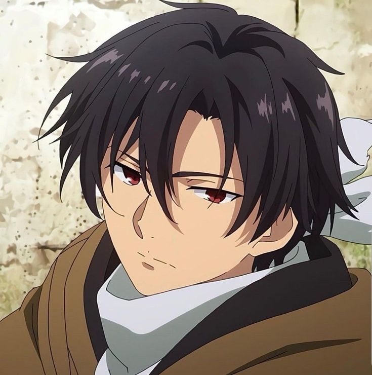
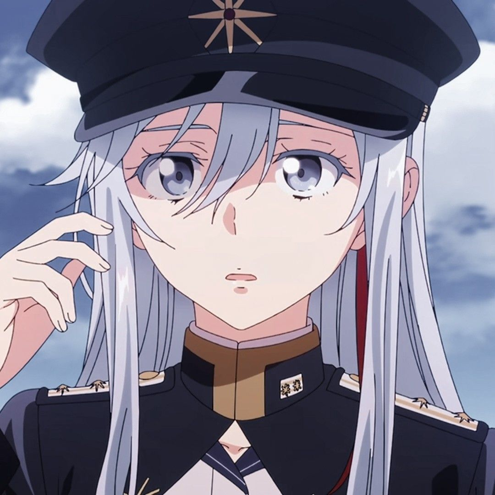
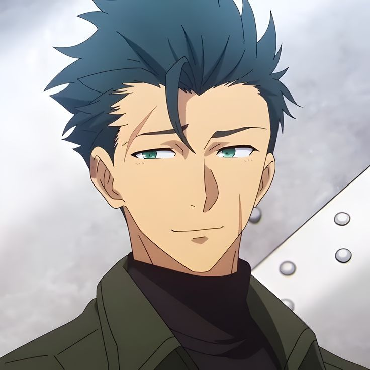
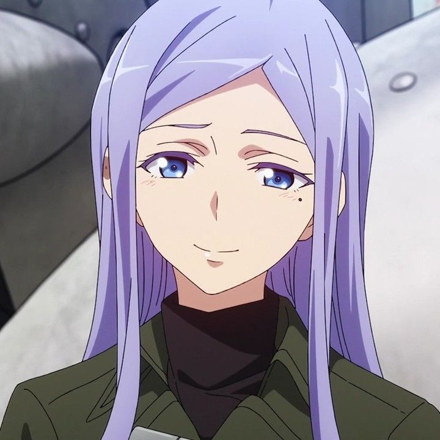
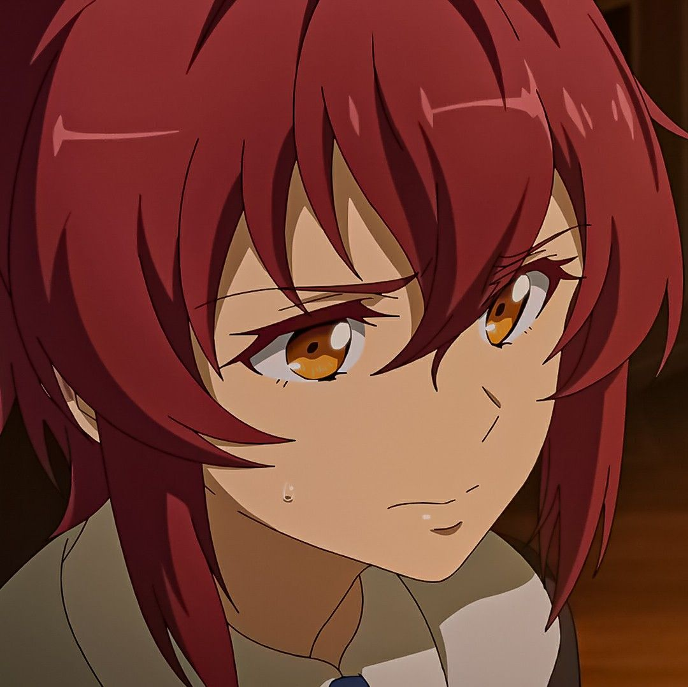
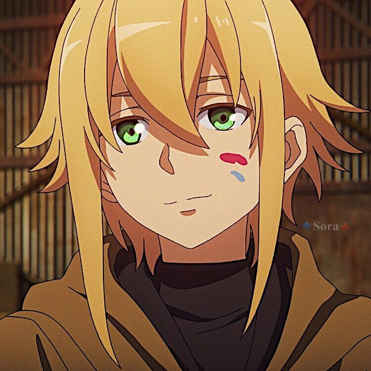
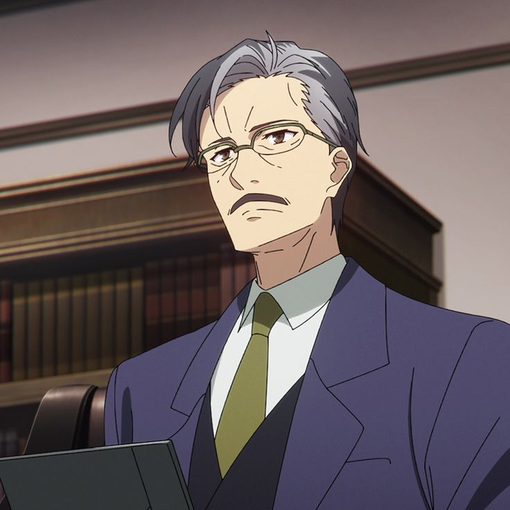
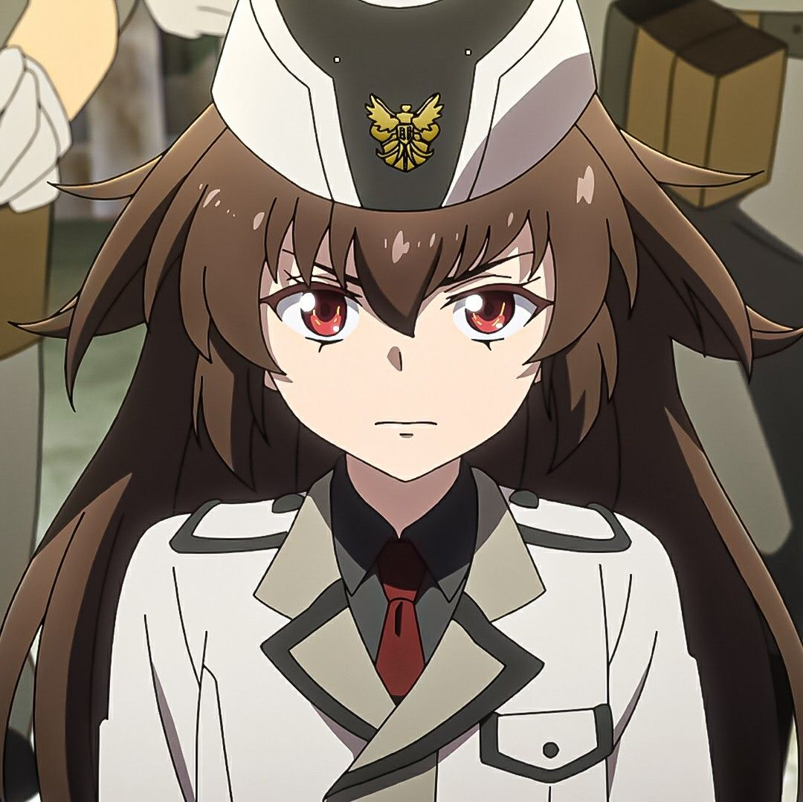

Pemimpin Skuadron Spearhead
Shin adalah orang yang luar biasa baik, bahkan setelah disakiti oleh begitu banyak orang dalam hidupnya. Ia merasa dirinya bersalah dalam masalah dengan saudaranya dan percaya bahwa dirinyalah yang perlu meminta maaf. Bahkan setelah dikucilkan dan ditakuti oleh Delapan Puluh Enam lainnya, Shin merasa bahwa sudah menjadi tanggung jawabnya untuk menanggung kematian rekan-rekannya dan membiarkan mereka meninggal dengan tenang di akhirat.Kemampuan Shin untuk mendengar suara-suara Legiun memberinya tekanan mental yang luar biasa, bahkan ketika ia sudah terbiasa mendengarkan ratapan orang mati yang tak henti-hentinya. Beban tanggung jawab dan efek dari kemampuannya telah berkontribusi pada sifatnya yang tabah dan kurangnya keceriaan. Meskipun demikian, ia memiliki sisi lembut yang biasanya muncul saat berinteraksi dengan Fido .

Handler
Lena lahir di bekas keluarga bangsawan Milizé. Setelah bertemu dengan Delapan Puluh Enam di luar Sektor Delapan Puluh Lima saat berusia 10 tahun, Lena mendedikasikan dirinya untuk menjadi seorang Handler guna membantu Delapan Puluh Enam di garis depan. Tekadnya membuahkan hasil, ia melewatkan beberapa tingkatan, lulus dengan nilai tertinggi di kelasnya, dan menjadi mayor di usia muda 16 tahun. Di militer, ia memiliki reputasi sebagai pemimpin skuadron Juggernaut yang efektif. Ia memiliki kemampuan taktis yang sangat baik dan dapat menganalisis data pertempuran untuk menentukan tingkat bala bantuan Legiun. [ 19 ] Lena menunjukkan ketidakpedulian terhadap opini sosial yang dianggapnya tidak bermoral atau tidak berguna. Meskipun diejek dan dicemooh oleh Handler lain yang tidak menyukai hubungan dekatnya dengan para Prosesor di bawah komandonya karena mereka dianggap sebagai sub-manusia pengkhianat, Lena tetap berkomunikasi setiap hari dan berusaha untuk menjalin ikatan yang lebih erat dengan skuadronnya. [ 20 ] Ia tetap teguh pada pendapatnya bahwa Delapan Puluh Enam tidak lagi dapat dianggap sebagai pengkhianat karena Kekaisaran Giadia dianggap telah jatuh. [ kutipan diperlukan ]

Anggota Senior Spearhead
Raiden adalah kakak laki-laki Spearhead Squadron; ia adalah pemimpin emosional yang tak mungkin bisa ditiru Shin. Ia juga disebut ibu skuadron, karena keahliannya di bidang-bidang yang secara tradisional feminin seperti memasak dan menjahit, ditambah dengan kegigihannya untuk memastikan semua orang baik-baik saja.Raiden tidak takut untuk bersikap konfrontatif dan terus terang. Setiap kali ia memiliki masalah dengan siapa pun, ia akan langsung mengungkapkannya tanpa rasa takut. Termasuk kaptennya, Shin, karena mereka telah sering bertengkar selama masa kebersamaan mereka. Saat pertama kali bertemu Shin, Raiden cepat membentak dan menyerang siapa pun yang membuatnya kesal, sehingga ia dijuluki Wehrwolf yang agak menghina . [ 11 ] Meskipun temperamennya yang panas telah mereda seiring bertambahnya usia, ia masih mempertahankan sifatnya yang kasar.

Anggota Spearhead
Anju lahir pada tanggal 2 Oktober RY 351 / SY 2132 dari dua orang warga negara Republik Alba. Kota asalnya adalah sebuah kota kecil di bagian timur Republik San Magnolia. [ 5 ] Setelah Undang-Undang Khusus Pemeliharaan Perdamaian Masa Perang dikeluarkan, Anju dan ibunya dikirim ke Sektor Kedelapan Puluh Enam karena mata biru mereka yang diwarisi dari leluhur jauh.Anju disiksa secara fisik oleh Delapan Puluh Enam lainnya di kamp interniran. Sebagai seseorang yang sebagian besar keturunan Alba, ia menjadi sasaran empuk bagi yang lain untuk melampiaskan kekesalan. Para pelaku kekerasan mengukir tulisan yang merendahkan di punggungnya, sejak ia memanjangkan rambutnya untuk menyembunyikan bekas luka. Setelah mendaftar, ia ditugaskan ke satu skuadron bersama Daiya Irma.Setelah beberapa waktu, Anju dan Daiya bergabung dengan Skuadron Claymore bersama Shin, Raiden , Theo , dan Kurena. Keenamnya kemudian dikirim ke Skuadron Ujung Tombak First Ward, empat tahun setelah Anju bertugas di RY 367.

Anggota Spearhead
Kurena memiliki rambut berwarna kastanye seperti Agate dan mata emas seperti kucing seperti Topaz . Rambutnya dipotong bob pendek. Sebagai anggota Spearhead Squadron, ia mengenakan seragam tempur kamuflase gurun di atas tank top berwarna zaitun kusam. Ia digambarkan sebagai anggota Spearhead Squadron asli yang paling berbakat.Ia menyimpan kebencian yang mendalam terhadap Alba karena pembunuhan orang tuanya di tangan tentara Republik Alba. Ia hadir bersama saudara perempuannya ketika tentara menembak ibu dan ayahnya untuk hiburan.

Anggota Spearhead
Theo digambarkan sebagai sosok yang polos dan sangat jujur dalam pikirannya. Sarkastis dan blak-blakan dalam tutur kata dan humornya, Theo kesulitan menahan diri untuk mengungkapkan isi hatinya. Hal ini paling jelas terlihat dalam omelannya terhadap Lena setelah kematian Kaie .Theo menyimpan buku sketsa yang sering ia gambar sebagai pengisi waktu luang.Theo menyimpan dendam terhadap sebagian besar Alba tetapi bersedia menerima bahwa ada beberapa yang terhormat karena pengalaman masa lalu di skuadron pertamanya. Skuadron pertamanya dipimpin oleh seorang mantan prajurit Alabaster dari Angkatan Bersenjata Republik yang hancur.

Federasi
Berkat kemampuan istimewanya dan didikan masa depannya sebagai calon Permaisuri, kepribadian Frederica merupakan perpaduan yang ganjil antara kedewasaan dan kekanak-kanakan. Saat serius, Frederica sangat blak-blakan dan mampu mengartikulasikan ucapannya dengan cukup dewasa untuk seseorang seusianya. Meskipun sikapnya yang angkuh seringkali menyinggung orang lain, ia juga mampu berargumen dengan orang dewasa tanpa rasa takut.Ernst adalah seorang idealis yang teguh dalam menjunjung tinggi niat baik umat manusia, percaya bahwa umat manusia lebih baik punah jika harus menyingkirkan orang-orang yang asing bagi mereka, terutama anak-anak. Ia sering diibaratkan seekor naga yang menyemburkan api, teguh dalam mempertahankan cita-citanya dan bersedia menghancurkan apa pun, bahkan umat manusia, jika cita-citanya tentang kemanusiaan yang baik hati tidak tercapai.

Federasi
Frederica adalah seorang gadis kecil dengan anggota tubuh ramping, tubuh mungil, dan wajah lembut bak boneka. Ia memiliki mata merah darah seperti Pyrope dan rambut hitam legam seperti Onyx yang menjuntai hingga ke lutut.Berkat kemampuan istimewanya dan didikan masa depannya sebagai calon Permaisuri, kepribadian Frederica merupakan perpaduan yang ganjil antara kedewasaan dan kekanak-kanakan. Saat serius, Frederica sangat blak-blakan dan mampu mengartikulasikan ucapannya dengan cukup dewasa untuk seseorang seusianya. Meskipun sikapnya yang angkuh seringkali menyinggung orang lain, ia juga mampu berargumen dengan orang dewasa tanpa rasa takut.